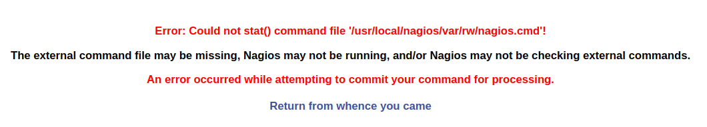

Nagios Core - 4.4.1
Basic information
Deploy date: 14th August, 2018
Official Website: https://www.nagios.org/about/
License: Nagios Open Software License, Nagios Software License, GNU GENERAL PUBLIC LICENSE
Directory Hierarchy
bin: Nagios binaries.
dell: Stores scripts, configuration files, images and resources of Dell Plugin.
etc: Stores Nagios configuration files.
include
libexec: Contains most of the plugins installed.
sbin: Nagios scripts
share: Contains Web interface files.
var
Installation
This entry covers the entire process performed for the installation and configuration of Nagios Core in Centos 7. This process of installation and configuration is automated using Ansible.
Mail Configuration
Note
This configuration is automatically set up in the step of synchronization in the taskfile nagios-config.yml if the base configuration is included in the synchronization list.
The commands notify-host-by-email and notify-service-by-email were modified adding the flag -A:
/usr/bin/printf "MAIL_BODY" | /bin/mail -A nagios -s "SUBJECT" $CONTACTEMAIL$In order to uncouple the mail definition from the command line, the flag
-A nagioswas added. With this option, mail will use the configuration defined in the account nagios, in the file/etc/mail.rc
Example:
account nagios {
set smtp=smtp.server.hostname:port
set sender=nagios@mail
set from="nagios@mail"
set ssl-verify=ignore
}
Plugins
Usage
Before executing the role it’s important to verify the value of the variables in the file
roles/healthckeck/vars/main.yml. These variables were created in order to uncouple from the code things like IPs, URLs and passwords. In the case of passwords, we used Ansible Vault for ciphering them.
ansible-vault playbooks/healthcheck.yml --ask-vault-pass
Caution
This Ansible role was created thinking in the Ansible Philosophy: The tool should be used to represent the state of the server, not as a procedural language but as a declarative one.
This role was developed to be run multiple times in the same server: If the real state doesn’t matches with the role state, the server is modified in order to match both states. If the server has well configured and well installed Nagios and it’s plugins, running the playbook will say Ok in most of the tasks, so it won’t break any configuration.
Note
The flag --ask-vault-pass is used because this role uses ansible-vault for encrypting private data like passwords.
Troubleshooting
Nagios Command Error
This error occurs when the user generates a modification in the Nagios Command file executing different actions with the Nagios Web Interface (eg. re-schedule checks). This error is corrected with the execution of the task selinux-config.yml.
By default, the Apache daemon cannot read/write the files under /usr/local/nagios/var/rw or
execute from /usr/local/nagios/sbin because these directories doesn’t belongs to
the httpd_sys_rw_content_t SELinux context and httpd_sys_script_exec_t context
respectively. This is what originates the problem.